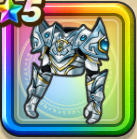

はぐれメタルよろい上
攻略班 7.5点 / ヒャド属性耐性+5%ギラ属性耐性+5%バギ属性耐性+5%ギラ属性耐性+5%スキルの斬撃ダメージ+1%デイン属性斬撃・体技ダメージ+5%【バトマス】スキルの斬撃ダメージ+1%【魔法戦士】デイン属性ダメージ+1%【パラディン】じゅもんHP回復効果+1%
くわしい特徴
【レベル別習得スキル】 Lv1ヒャド属性耐性+5% Lv5守備力+7 Lv8すばやさ+5 Lv10ギラ属性耐性+5% Lv12スキルの斬撃ダメージ+1% Lv14デイン属性斬撃・体技ダメージ+5% Lv16バギ属性耐性+5% Lv18【バトマス】さいだいMP+5 Lv20【バトマス】スキルの斬撃ダメージ+1% Lv22【魔法戦士】デイン属性ダメージ+1% Lv24【パラディン】じゅもんHP回復効果+1% Lv25ギラ属性耐性+5% 【限界突破スキル】 1凸攻撃力+5 2凸守備力+5 3凸すばやさ+7 4凸さいだいHP+10